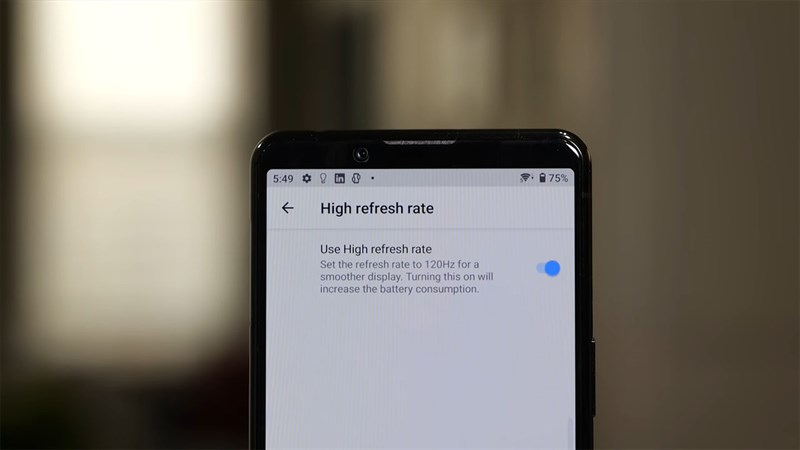
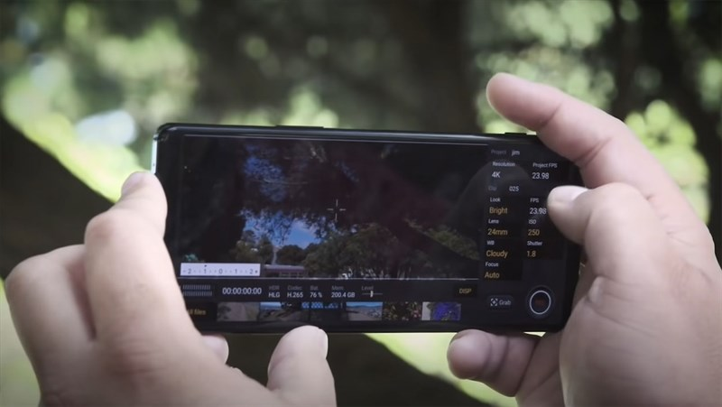
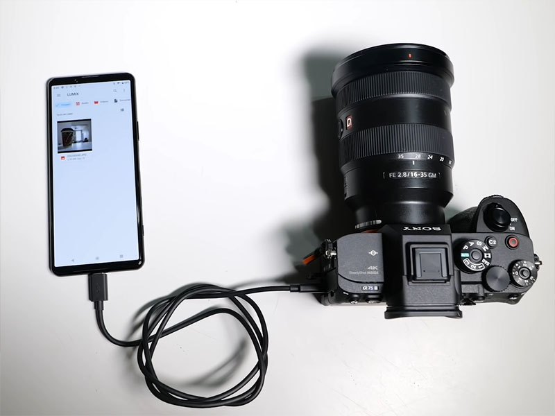
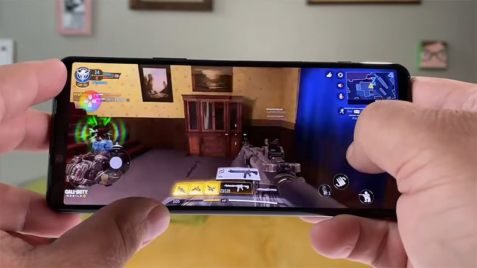
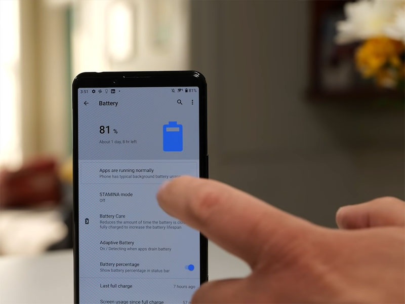

Smooth with the 120Hz display of the Sony Xperia 5 Mark II
According to reviews from the news site, the Xperia 5 Mark II screen is not as beautiful and sharp as what is displayed on the Xperia 1 Mark II. To compensate for that gap, Sony has equipped with smooth 120 Hz refresh technology. For a bit of fun, if you want to experience a super sharp resolution screen, choose the Xperia 1 Mark II with a 6.5-inch 4K panel. If you want a smooth user experience, you can choose Xperia 5 Mark II.
Like the Xperia 1 Mark II, the Sony Xperia 5 Mark II version also has a narrow screen with an aspect ratio of 21: 9, which is considered very suitable for watching hot movies on Netflix. This device has a screen size of 6.1 inches, a resolution of 2,560 x 1,080 pixels.

The design of Xperia 5 Mark II has many changes
While phone companies have been gradually changing design trends, Sony is one of the few manufacturers that has a bit of a slow transition. Reviewers from the news site did not appreciate the design of the device and said that the Xperia 5 Mark II looks a bit boring compared to the Samsung Galaxy S20.
Although there are thin bezels on the sides, the top and bottom bezels have not been thoroughly optimized according to the trend of mobile products in 2020. The machine has a slightly elongated body, so when holding Sony Xperia 5 Mark II you will have a new feeling compared to other devices on the market. Sony loves the style of flattening both the front and back of the product, of course this also applies on the Xperia 5 Mark II itself.
Sony Xperia 5 Mark II impresses with cameraphone
One of the strengths on the camera app is the ability to record 4K videos at 120 frames per second. As you may have forgotten, the high-end Sony Xperia line adds the Cinema Pro feature and lets you record 4K video at 120 fps. Or that, you can shoot at 30fps and 24fps.

Overall, the Sony Xperia 5 Mark II has the same camera specs and interface as the Xperia 1 Mark II. In Xperia 5 Mark II, you can capture and export photos in RAW format. In addition, the features in the Photo Pro app look similar to those found on the Sony A7SIII camera. Speaking of the A7SIII, you can connect the camera to the Xperia 5 Mark II via USB-C.

Powerful Xperia 5 Mark II with Snapdragon 865 processor and 5G connectivity
As the title says, the Xperia 5 Mark II has a powerful Snapdragon 865 processor and supports 5G connectivity. Sony says the upcoming Xperia Pro will be the first Sony phone to support 5G in the US. Thanks to the high-end processor, it is not surprising that the phone brings the same performance score as the Xperia 1 Mark II, OnePlus 8 Plus or the US pound Galaxy S20 Ultra.

It is recommended that you set the screen refresh rate to 120 Hz instead of 60 Hz, so that the multi-tasking experience is smoother and more smooth than ever. Screen scanning speed not only affects the normal experience, but also affects the gaming experience. Reviewer of the news site evaluated that the performance of this Sony was smooth and comfortable when playing games.
When it comes to gaming, part of the must-have feature is the improved Game Enhancer, which lets you customize the refresh rate for games. You will experience high smoothness with a touch sampling rate of 240 Hz.
How is the battery life of the Xperia 5 Mark II?
Talking about battery life, Xperia 5 Mark II has a battery similar to Xperia 1 Mark II of 4,000 mAh, larger than its predecessor Xperia 5. In 120 HHz screen mode to test the battery, when playing videos continuously. In airplane mode and 50% brightness, the device can be maintained for 18 hours and 36 minutes.

One of the attractive features on the Xperia 5 Mark II is HS Power Control. This feature allows you to plug in the charger and supply power directly to the phone. With HS Power Control on, the phone gets warm while gaming, but never gets too hot. You can also enable HS Power Control for other uses such as video recording or photo editing.